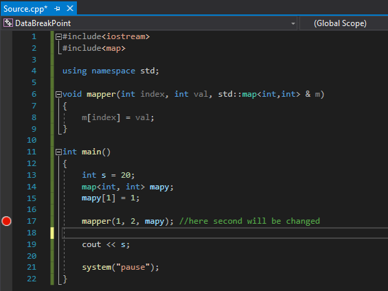
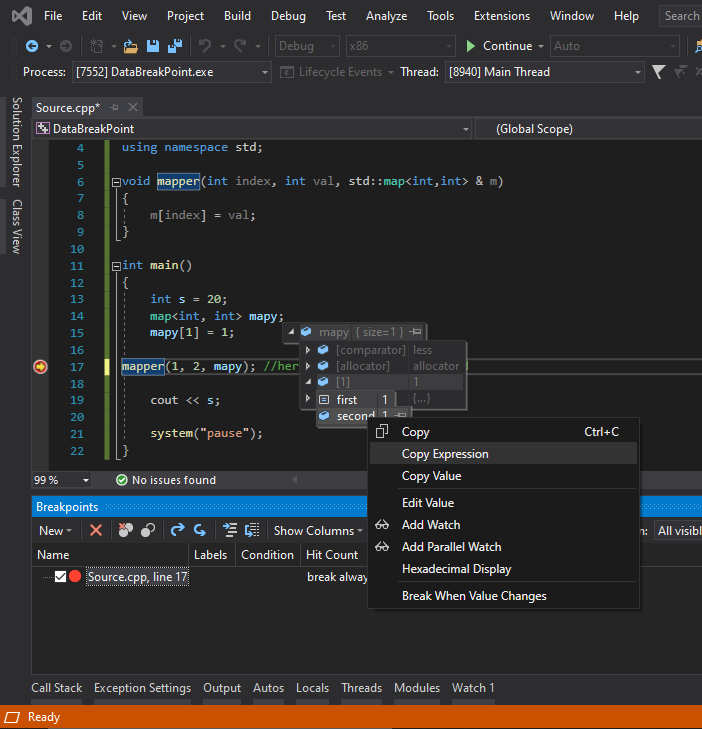
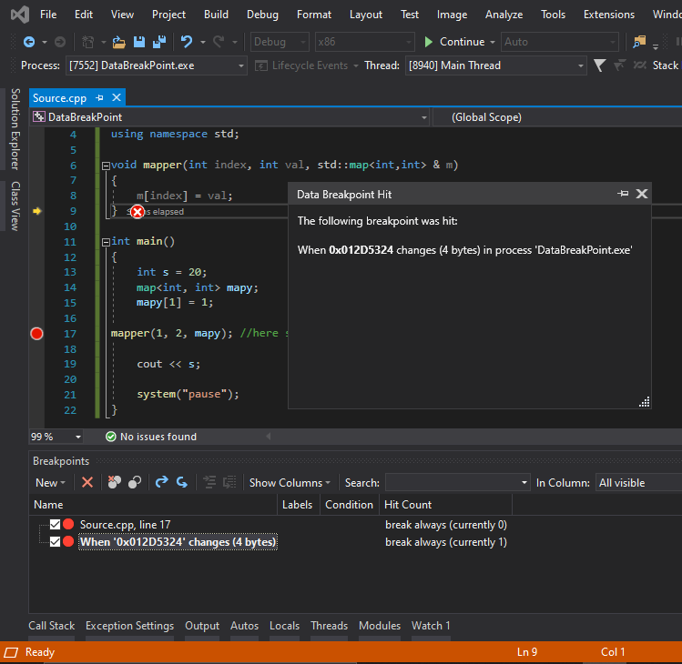

Many times, it is quite tedious to find out where a variable data is changed. The legacy way
of finding it is to follow the variable assignments and it can get complex when the variable
has references or pointer types. We must track them all to find where the actual data has
changed. But if we see closely all of them are bound to a specific memory location where the
data resides. This where the “data breakpoints” in Visual Studio come in.
Note: Data breakpoints will not work if the project has CLR support.
For normal variables its strait forward in MSDN Data Points.
We will take an example program where we need to find where the map value changes for a
specific value

Now we have to browse the key and value pairs which we intend to track by hovering

The expression copied will be similar to the following expression
"((std::_Tree_node
Now remove the ,view(MapHelper) at the end and add & at the front of the expression , after this it
would look like
"&((std::_Tree_node
Now the data breakpoint is set , when ever the data changes at specific address location the
break point will hit in debug mode.

In this way we can track memory locations associated with variables.